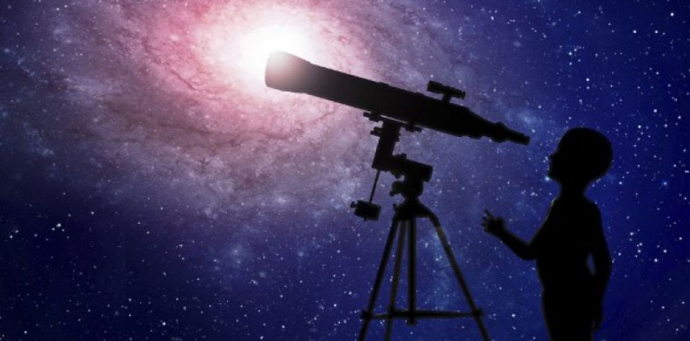

Hello l'univers !
Chaque semaine, on se retrouve pour faire le point sur l'actu scientifique de l'espace.
Les contributeurs
Experts mais avant tout passionnés, ce sont eux qui animent L'Univers à Portée de Clic:
-
Thomas Pesquet : spationaute français. Parti dans la station spatiale internationale de novembre 2016 à juin 2017 dans le cadre de la mission Proxima, il a soif de partager son expérience ;
-
Christophe Galfard : physicien et écrivain français. Convaincu que l'Univers doit être à accessible à tous, il est à l'origine de l'ouvrage de vulgarisation scientifique
L'Univers à Portée de Main ;
-
Nicolas Martin : journaliste, animateur et producteur de radio et de télévision, scénariste et réalisateur français. Passionné d'astronomie, il n'hésite pas à inviter des figures emblématiques de cette science dans son émission
La Méthode Scientifique sur France Culture.

Une solution pour découvrir l'astronomie... Sans dépenser une somme astronomique ! Retrouvez chaque semaine l'actualité scientifique sur l'espace. C'est gratuit, simple et fiable !
Attention au décollage... C'est parti !